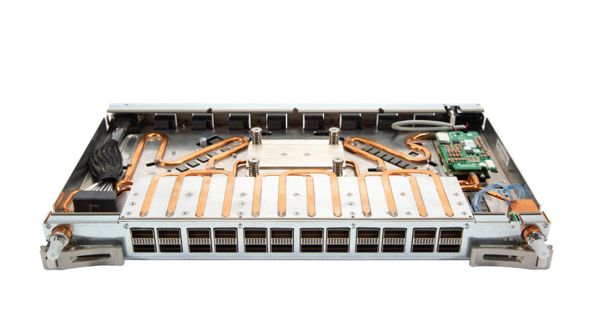

Hi! My name is Josh Yan, and I'm an engineer based in the DFW Area.
I'm an ASIC Design Verification Engineer at HPE, and a 2024 Computer Engineering graduate
of Texas A&M University. My experience includes Design Verification for ASIC development
in my previous summer internship using SystemVerilog and UVM, as well as coursework in
C++, Verilog, circuit design and implementation, and mathematics from calculus to linear algebra.
Outside of work:
I've been to 14 countries, and enjoy traveling and experiencing the world.
I like to dance! I was the president of a freestyle street dance club at my time at A&M. Nowadays I enjoy practicing
and honing my skills, and even occasionally compete in battles and events. Just don't ask me about Raygun!
I'm a fan of the Dallas Mavericks, and I've been to many games; witnessing a Dirk Nowitzki game winner in person was a core memory of mine.
I have a Shiba-Inu Chihuaha mix named Trooper.
I love trying new foods and also enjoy freestyling and honing my skills in the kitchen almost just as much as on the dance floor!
VLSI Design Verification Engineer at Hewlett Packard Enterprise
Doing cool things at HPE : )
Part of the HPC (High Performance Computing) and Cray Team at HPE
Focused on the Packet and Connection Tracking block on the Cassini-3 network interface controller (NIC) chip for the Slingshot-3 network
Design Verification Intern at Hewlett Packard Enterprise (Summer 2023)
Worked on transaction translating between different interfaces of a Network Interface Controller, as well as handling retrying data requests in case of failures
Wrote, debugged and simulated a sequence function in SystemVerilog generating and randomizing incoming data requests and translating them into request headers to be passed on between different interfaces of the ASIC
Used my generation functions in a separate sequence to drive stimulus to the DUT by generating requests
Learned and utilized tools such as Linux, UVM, SystemVerilog, Functional Coverage, Verdi, and Perforce
Retail Sales Associate at Nike (Summer 2021 & 2022)
Assisted customers in the various store departments, mainly footwear
Performed transactions and routinely exceeded company goals in online seamless orders
Promoted the Nike App and the Nike Membership
Kept the store clean and organized
Helped process and sort merchandise
Worked together with other team members to serve customers and help the store run smoothly
Education
Texas A&M University (2020-2024)
B.S. Computer Engineering
Relevant Courses: Calculus 1-3, Differential Equations, Linear Algebra,
ENGR 102 (Python Coding Lab), CSCE 120 (C++ Program Design and Concepts) ,
PHYS 207 (Physics - Electricity and Magnetism), ECEN 248 (Digital System Design),
ENGR 217 (Experimental Engineering and Physics Lab - Electricity and Magnetism),
CSCE 221 (C++ Data Structures and Algorithms), CSCE 222 (Discrete Math),
ECEN 214 (Circuit Theory), ECEN 350 (Computer Architecture), CSCE 313 (Computer Systems),
CSCE 331 (Software Engineering), CSCE 462 (Microcomputer Systems), ECEN 325 (Electronics),
ECEN 454 (Digital Analog Circuit Design), CSCE 421 (Machine Learning), CSCE 310 (Database Systems)
ECEN 424 (Fundamentals of Networking), CSCE 483 (Senior Design/Capstone)
Extracurriculars
President of Texas A&M's Freestyle Underground Street Dancers (FUSD) (2021-2024)
We promote fun as well as education about the Hip Hop dance culture in the Bryan/College Station area through various disciplines of freestyle dance, mainly breakdancing, while improving members of the organization through events such as competitions, performances, social events, and workshops.
Led other officers in planning various events, such as fundraisers, workshops, performances, and dance competitions; work included budget allocation, paperwork and documentation, contacting outside talent, working with school offices and other organizations, people management, and promotion via social media
Performed for various city, school, and student events around the Bryan/College Station area, such as TAMU’s Orientation Week, TAMU’s School of Arts and Sciences, and the City of Bryan’s First Friday Street Fair
Organized multiple dance events and workshops for our members, other TAMU students and organizations, and the Texas freestyle dance community, helping build and connect the dance community locally and across the state.
Secured thousands of dollars in school funding for the organization via grants and volunteer fundraising opportunities
Guided and led our members throughout the school year, providing safe spaces and opportunities for them to learn and grow their skills
Projects
Here are a few projects I've worked on over the years.
Smart Kitchen Scale
An image of our system hardware.
Project for CSCE 483 Computer Systems Design/Senior Capstone
With a team of 6, developed a Smart Kitchen Scale, capable of using machine learning and computer vision to identify food names and extract digits from a 7 segment display, and then use these labels to return detailed nutritional information in a connected mobile app
Helped develop and test a convolutional neural network via TensorFlow and MobileNetV2 to identify 30 selected fruits and vegetables
Used OpenCV to extract numbers from a camera image and read the digits, performing image manipulation such as Gaussian blurring and greyscaling
Used GPIO to read in user input, allowing users to take pictures with the camera and capture image data
Worked with my team to create extensive documentation and to represent the TAMU engineering department
Presented our work in front of fellow students, faculty, and industry professionals from Walmart and Visa

HPE's Slingshot Interconnect, which I helped verify and test.
Assignment for my Design Verification internship at HPE.
Translated data transactions between the Outbound Transfer Engine (OXE) and the Inbound Transfer Engine (IXE) interfaces in the Cassini-3 Network Interface Controller, overriding the base sequence.
Extracted data from a data message sent by the OXE, and used said data to populate and randomize an intermediate request frame object, handling different message types.
Used values sourced from the request frame to randomize and populate a data request object, which was subsequently sent to the IXE.
I used SystemVerilog to write the sequence functions, runSim and Linux to test and debug, Launch for simulation, and Perforce for version control and to access documentation.
Worked extensively with my fellow DV team to update my progress, learn the HPE code base, and debug and test my sequence.
Restaurant Online Point of Sale System
Project for my CSCE 331 Software Engineering Class
With my team, created a point of sale system website that allowed users to order food at a fictional restaurant while also updating a restaurant database that stored information pertaining to the restaurant, such as employee information, inventory, menus, sales, and sales trends.
We used SQL to create a database, HTML and Bootstrap for the front end design, LightSail to host our website, Python for randomizing and populating the database, and JavaScript with PHP for the back end functionality.
Worked professionally with my team members using the Agile Development Methodology, holding scrum meetings, peer reviews, and user feedback sessions.
Connect Four Opponent
Our completed Connect Four embedded systems project.
Project for my CSCE 462 Microcomputer Systems Class
With my partner, created a physical Connect Four game system with a Raspberry Pi 3 with both a traditional 2 player game mode and an automated single player game mode.
We used Python to implement the automated game algorithm, based on Victor Allis’s thesis and the MinMax algorithm, and communicated with the Raspberry Pi using event listeners and various packages that controlled a light matrix representing the game board, and push buttons to send inputs.
Created extensive documentation on the project, such as a report and presentation.
Dance Events
Promotional posters I designed for some of the freestyle street dance competitions I organized.
With my club FUSD, I organized and hosted multiple dance events such as dance battle competitions and workshops, bringing together freestyle dancers from our club, other organizations on campus, and from the wider Texas freestyle dance community.
Worked with my team to discuss and decide on key logistics, such as event vision, dates, guests to invite and contact, itinerary, format, and budget
Reached out to and negotiated with outside talent, such as judges, workshop teachers, and DJs
Designed and created promotional materials and promoted events via social media
Kept the event running smoothly by MCing, serving as a point of contact with guests, and working with all attendees to ensure a positive experience
Contact
If you would like to contact me, you can reach me at:

.jpg)
.png)